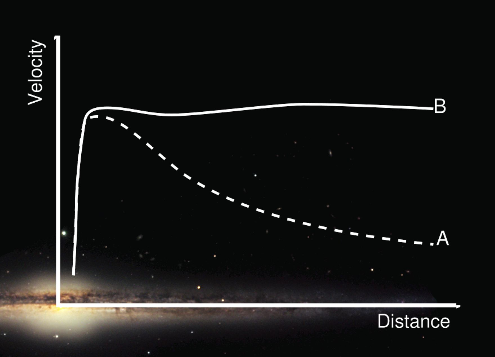
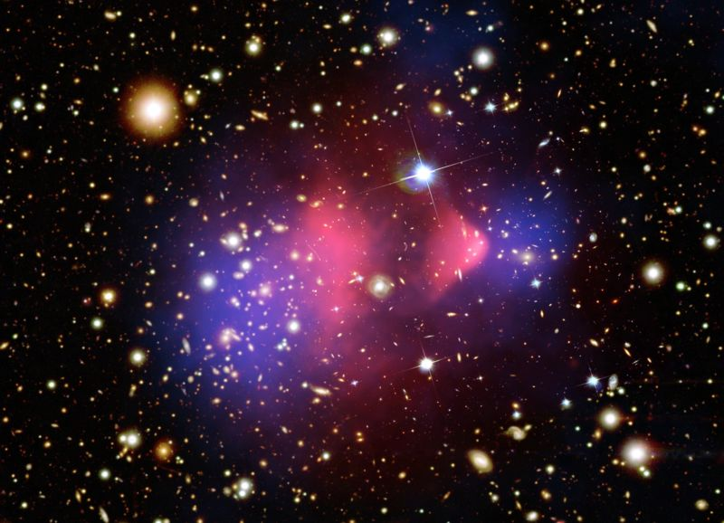

You know, dark matter matters.
- Neil deGrasse Tyson
Afspil Dagens Afsnit:

Stikord:
Rotationskurve: En kurve, der viser stjerners fart i deres kredsløb omkring galaksecentrum som funktion af deres afstand fra centrum. Den mængde stof vi obsereverer, burde få stjerner til at bevæge sig langsommere, jo længere væk man kommer, men dette er ikke tilfældet. Farten er næsten konstant gennem hele galaksen. Der må derfor være noget stof, der forudsager dette, hvilket kaldes mørkt stof. På figuren kan ses to grafer. A viser, hvad vi bør se ud fra den mænge masse vi kan observere, og B viser, hvad vi faktisk ser.Gravitationslinseeffekt: Lys bliver afbøjet nær massive objekter. Vi kan se dette ske, hvor der ellers ikke er noget masse, der giver anledning til dette fænomen. Der må derfor være noget mørkt stof, som kan afbøje lyset.
Weakly interacting massive particles (WIMP): Den førende teori for, hvad mørkt stof er. Hypotetiske og ukendte partikler, der ikke er en del af det man kalder Standardmodellen, der beskriver den elektromagnetiskekraft, svage- og stærkekernekraft, samt de kendte fundemental partikler.
Massive astrophysical compact halo object (MACHO): En anden teori, der beskriver, hvad mørkt stof kan være. En MACHO er et himmellegeme, der består af normal stof, men udsender stort set intet lys, hvilket er derfor vi ikke kan se det. Dette kan for eksempel være et sort hul. Man regner med, at mørkt stof består mest af WIMPs. Sagt med andre ord: WIMPs dominere MACHOs.
Bullet Cluster: The Bullet Cluster består af to kolliderende galaksehober (clusters). Gravitationslinseeffekt af The Bullet Cluster, giver det bedste evidens for eksistensen af mørkt stof. Herunder ses et billede af The Bullet Cluster.
